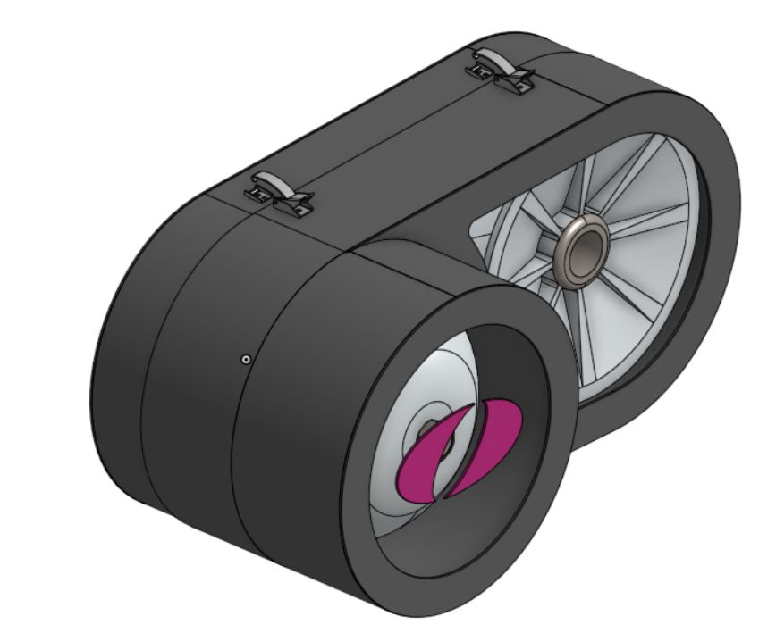
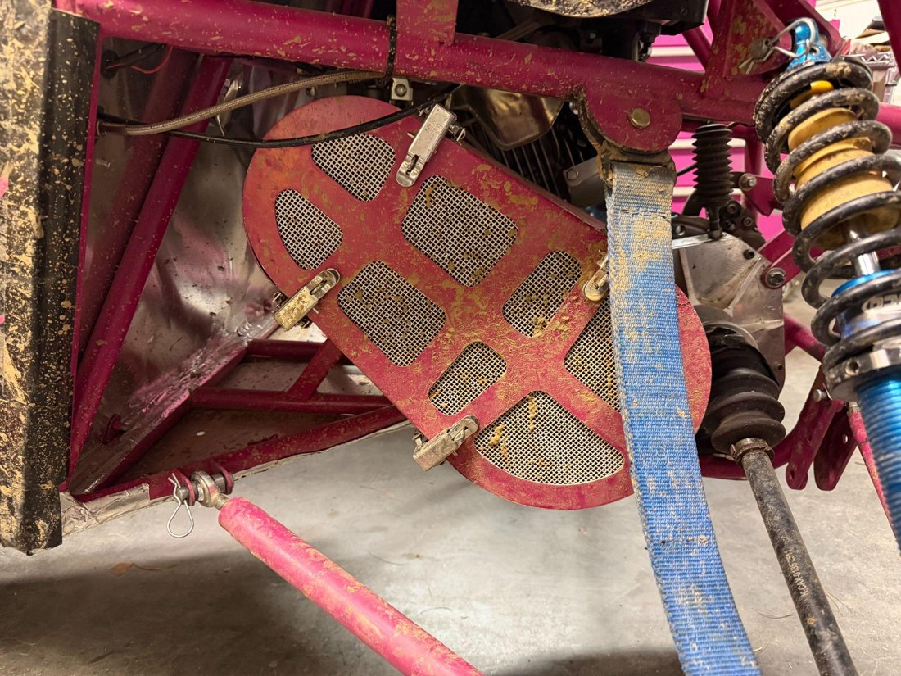
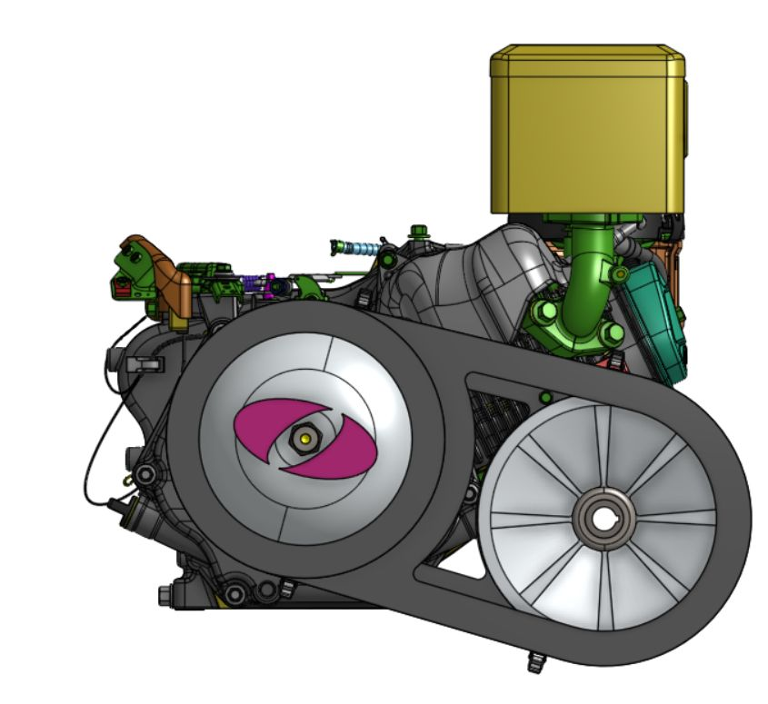
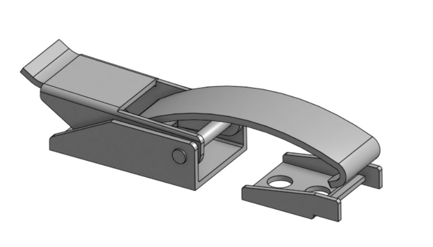
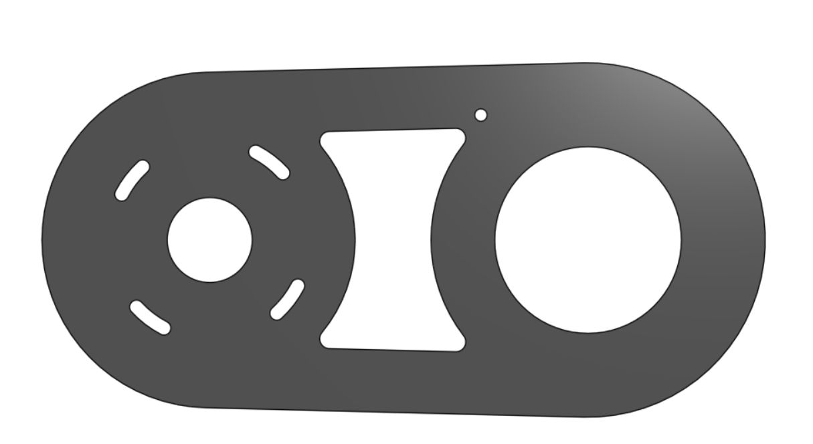
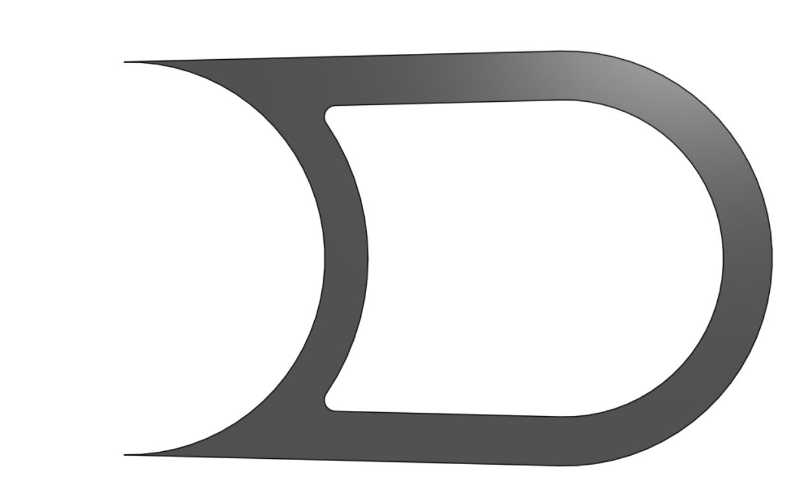

Olin Baja SAE · In progress
CVT Guard Redesign
A smaller, lighter sheet metal guard for the Baja car’s CVT that wraps tightly around the pulleys and opens in the middle on quick-release latches.

Overview
The CVT guard covers the belt and pulleys on our Baja car. The SAE rules require one, so it has to protect people from the spinning parts, but our old guard was big and heavy. I co-designed a replacement that does the same job in less space and with less material, then presented the design review to the drivetrain subteam.
What the rules require
Section B.9 of the SAE Baja rulebook sets the constraints, and I turned the relevant parts of this 120+ page document into design requirements for the subteam:
- Made from 1.5 mm steel or 3 mm aluminum (B.9.2.1)
- Wider than the pulleys by 0.5 in, with at least 0.5 in overlap on multipart covers (B.9.2.2.1)
- Rigid, and keeps fingers and clothing out (B.9.3, B.9.3.1)
- Fastened only with threaded fasteners or quick-release latches (B.9.3.2)
The old guard
The old guard had built-in vents, but it took up a lot of space, weighed 4.4 kg, and wasn’t well optimized. The goals for the new one were simple: more compact and lighter.

The new design
- More compact. The old guard left a lot of dead space between the front of the primary pulley and the secondary pulley. In the new design the sheet metal follows the contour of the pulleys, so that space is gone.
- Lighter. The main metal band is much shorter, and there are cutouts in the front and back plates that remove more material.
- Ventilation. The same cutouts double as vent ports, so the lightening cuts also let air through.

Latches
The guard is split into two pieces joined midway by four quick-release draw latches, two on each side. I led the selection and mounting design. Opening the guard exposes more of the pulleys, so they’re easier to inspect and the team spends less time on them at a pit stop.

- Bent latch design, 17-7 PH stainless steel
- Screw-on keeper, and widely available if we need replacements
- Quick-release latches are allowed by the rules (B.9.3.2)
Fabrication
The guard is made in-house from steel. Flat parts are plasma cut and the casings are bent from sheet metal.
- Plasma cut: front panel, back panel, primary pulley cover, secondary pulley cover, and the Olin logo.
- Sheet metal bend: primary pulley casing, front casing, back casing, and secondary pulley casing.
- Material estimate: I treated every part as a rectangle to estimate the steel to order, which came to about 812 in² in total.


What’s next
- Structural tests for the guard and its mounts
- Measure the actual size and weight reduction compared with the old guard
- Finalize the vent geometry and the cost
- Add mounting holes for the latches and clean up the model